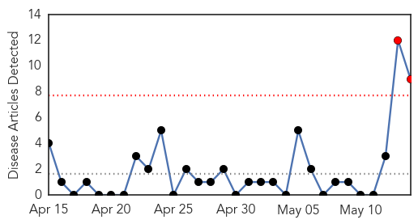

30 Day Trends
Web: 2 alerts, 0 warnings
Twitter: 0 alerts, 0 warnings
Top Articles:
- 1.000
- 2 US health staff ill after Mers exposure
- 1.000
- Two US health workers ill after MERS exposure - World News
- 1.000
- Two U.S. health workers ill after MERS exposure; World Health body meets in Geneva
- 1.000
- MERS warning signs at 22 major US airports
- 1.000
- Two U.S. health workers ill after MERS exposure; World Health body meets in Geneva
- 1.000
- Sick Florida Hospital Worker Negative for MERS
- 1.000
- Sick Florida Hospital Worker Negative for MERS
- 0.999
- Health officials alert airports, Customs for MERS
- 0.999
- The Voice of Russia: News, Breaking news, Politics, Economics, Business, Russia, International current events, Expert opinion, podcasts, Video
Top Tweets:
-
No tweets found for May 14, 2014
Web/News Articles
Tweets